📘 อ่านเส้นเชื่อม
- เส้นทึบ — Eloquent relation (hasMany / belongsToMany)
- เส้นประ — FK reference / service dependency
- ป้ายบนเส้น = ชื่อ method จริงใน Model เช่น
registrations()
🗂️ ขอบเขตที่วาดไว้
- Models (11): User, Activity, ActivityCategory, Registration, Attendance, ActivityFeedback, Certificate, Room, Message, JobListing, JobApplication/JobComment
- Services (5): ChatService, CheckInService, FaceVerificationService, CertificateService, QrCodeService + ChatRepository